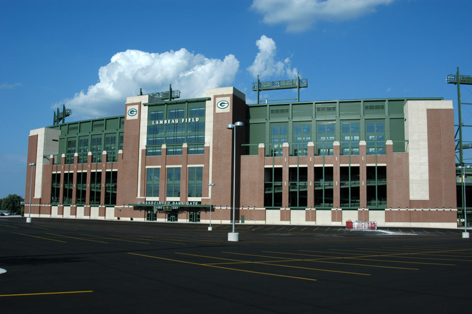

Scroll to learn about the Green Bay Packers, one of the most historical and iconic franchises in the National Football League (NFL).
The Green Bay Packers are a professional American football team based in Green Bay, Wisconsin. The Packers compete in the National Football League (NFL) as a member of the National Football Conference (NFC) North division.
They are the third-oldest franchise in the NFL, established in 1919, and are the only non-profit, community-owned major league professional sports team based in the United States. Since 1957, home games have been played at Lambeau Field. They hold the record for the most wins and championships in NFL history.
The Packers are the last of the "small-town teams" that were common in the NFL during the league's early days of the 1920s and 1930s. Founded in 1919 by Earl "Curly" Lambeau and George Whitney Calhoun, the franchise traces its lineage to other semi-professional teams in Green Bay dating back to 1896.
Between 1919 and 1920, the Packers competed against other semi-pro clubs from around Wisconsin and the Midwest, before joining the American Professional Football Association (APFA), the forerunner of today's NFL, in 1921. In 1933, the Packers began playing part of their home slate in Milwaukee until changes at Lambeau Field in 1995 made it more lucrative to stay in Green Bay full-time; Milwaukee is still considered a home media market for the team.
Although Green Bay is the smallest major league professional sports market in North America, Forbes ranked the Packers as the world's 23rd-most-valuable sports franchise in 2025, with a value of $6.65 billion.
The Packers have won 13 league championships, with nine pre-Super Bowl NFL titles and four Super Bowl victories. The Packers, under coach Vince Lombardi, won the first two Super Bowls in 1966 and 1967; they were the only NFL team to defeat the American Football League (AFL) before the AFL–NFL merger
| Season | Opponent | Score | Super Bowl |
|---|---|---|---|
| 1966 | Kansas City Chiefs | 35–10 | Super Bowl I |
| 1967 | Oakland Raiders | 33–14 | Super Bowl II |
| 1996 | New England Patriots | 35–21 | Super Bowl XXXI |
| 2010 | Pittsburgh Steelers | 31–25 | Super Bowl XLV |
The Super Bowl trophy was named The Vince Lombardi Trophy.
The Packers are longstanding adversaries of the:
Today, they compete in the NFL's NFC North division (formerly known as the NFC Central Division). They have played more than 100 games against each of those teams and have a winning overall record against all of them
Packers fans are often referred to as cheeseheads, a nickname for Wisconsin residents reflecting the state's bountiful cheese production first leveled as an insult at a 1987 game between the Chicago White Sox and Milwaukee Brewers.
Instead, it came to be a statewide source of pride, and particularly since 1994 has been embraced by Packers fans. Bright yellow triangular cheesehead hats are a fixture wherever the team plays.